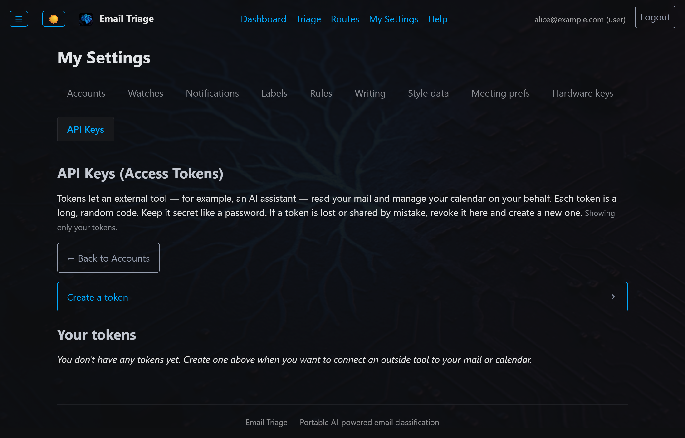

In practice
Token management + sample response.

Token management UI — bearer tokens scoped to a single user's accounts

Sample JSON response from /api/v1/health — liveness, DB status, audit health, push watchers, build SHA
A serious email automation system can't be a destination. It has to be a participant in your broader workflow. 27+ JSON endpoints. Bearer auth. HIPAA hard-off.
Why it exists
Claude, custom GPT-family agents, internally-hosted LLMs running tool-calling loops. The API gives the agent list_messages / search_mail / triage / draft_reply without rendering HTML or clicking buttons.
Pull "what mail did we get from Customer X this week" or "list of action-required messages from the last 24 hours" on demand. Surface mail context inline in the CRM record.
Triage activity as a data source — counts per category, response-time analytics, per-account volume trends. Standard data-pipeline tooling ingests the JSON.
Python, shell, n8n / Zapier-style flows. A stable HTTP contract instead of scraping the admin UI. Cron jobs, scheduled triage sweeps, summary digests.
API Surface
/api/v1/*Organized into five families. All return JSON. All bearer-token authenticated.
Renamed in v0.2.0. This surface was /api/openclaw/* through v0.1.x. Existing integrations keep working unchanged — every legacy path issues a 308 Permanent Redirect to its /api/v1/* equivalent, preserving the HTTP method and request body.
| Family | Endpoint | Purpose |
|---|---|---|
| Account + Health | GET /api/v1/health | Liveness + token-scope verification |
GET /api/v1/accounts | List accounts the token is scoped to | |
| Mail Read + Search | GET /accounts/<id>/messages | Paginated mail list with filter |
GET /accounts/<id>/messages/<msg_id> | Single message detail | |
GET /accounts/<id>/mail/search | Full-text + structured search | |
POST /accounts/<id>/mail/bulk | Bulk-fetch multiple messages | |
POST /accounts/<id>/bulk/mail/fetch | Bulk-fetch with custom query DSL | |
GET /accounts/<id>/bulk/mail/full | Full-body bulk read | |
| Mail Write | POST /accounts/<id>/messages/<msg_id>/label | Apply a label |
POST /accounts/<id>/messages/<msg_id>/move | Move to folder | |
POST /accounts/<id>/messages/<msg_id>/archive | Archive | |
POST /accounts/<id>/messages/<msg_id>/draft | Create a draft (with in_reply_to threading) | |
POST /accounts/<id>/bulk/mail/write | Batch label/move/archive | |
| Triage | POST /accounts/<id>/triage | Trigger triage with a custom query + limit |
GET /api/v1/runs | Historical triage runs | |
| Calendar | GET /accounts/<id>/calendar/events | List events in a date range |
GET /accounts/<id>/calendar/events/<id> | Single event detail | |
POST /accounts/<id>/calendar/events | Create event | |
POST /.../events/<id>/respond | Accept / decline / tentative | |
GET /accounts/<id>/calendar/free-slots | Find free slots within a horizon | |
POST /accounts/<id>/calendar/bulk-respond | Batch-respond to multiple events |
Auth + Authorization
Each token is bound to a single user. The user's accounts are visible via the API. Tokens are created via the admin UI; revocation is immediate (token-table check on every request).
Token-bucket algorithm with operator-configurable defaults. Different tokens get independent buckets so a runaway agent on one token doesn't starve others.
A token can access only accounts the user owns or has been granted delegate access to. Admin role does NOT bypass this gate. Agent tokens carry operator intent, not role privilege. Narrow contract reduces blast radius if a token is compromised.
Any account with the HIPAA flag set returns 403 on this API surface, period. No "with BAA acknowledgment" override on this path. Even a properly-BAA-covered agent endpoint creates a second exfiltration surface — the safer posture is to keep HIPAA accounts UI-only.
In practice

Token management UI — bearer tokens scoped to a single user's accounts
Sample JSON response from /api/v1/health — liveness, DB status, audit health, push watchers, build SHA
Integration patterns
Wire the API as a tool definition; the agent calls list_messages / search_mail / triage / draft_reply as natural-language requests come in. The agent never sees raw provider tokens; the operator manages OAuth lifecycle separately.
A daily cron job that calls POST /accounts/<id>/triage with a custom query, then GET /api/v1/runs to verify success. Useful for "run a sweep of marketing@ every Monday at 8am and post a summary to Slack."
Pull /api/v1/runs into your data warehouse for triage volume + response-time analysis. The endpoint returns JSON; standard data-pipeline tooling (Airflow, dbt, Fivetran) handles the rest.
A custom webhook from your CRM hits GET /accounts/<id>/mail/search?from=customer@example.com to surface relevant mail context inline in the CRM record. No scraping. No re-authenticating against the provider.
Limitations
A 30-minute call to scope integration patterns, token scoping, and webhook design.
Schedule a Conversation